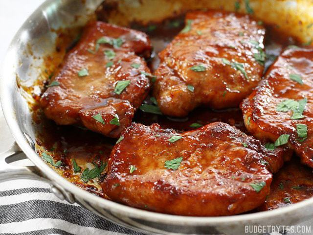

Pork Chop Recipe

Ingredients
- Rib Chop
- Olive oil
- Corn
- Butter
- Garlic
- Fresh Thyme
- Salt and Pepper
Procedure
- Remove your pork chops from the refrigerator and season generously
with salt and pepper.
- If you have 5-10 minutes to spare, allow your chops to rest and come to room temperature.
- STo cook on the stovetop, heat a little bit of olive oil in a large skillet over medium-high heat.
- Add the remaining tablespoon of butter, the minced garlic, and chopped thyme to the skillet.